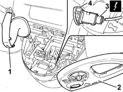

5550C14 HAZARD WARNING LIGHT SWITCH - R+R
- Path
- Procedures > 55 ELECTRICAL EQUIPMENT > 5550 WARNING AND MANOEUVRING INDICATORS > 5550C TURN SIGNAL/HAZARD WARNING LIGHTS > 5550C14 HAZARD WARNING LIGHT SWITCH - R+R
- Kind
- repair procedure (removal / refitting; the operation number is the code)
- Applies to
- all engines; all production periods
- Interactive page
- https://sloeber94.github.io/elrnDB-fUlss/en/#/179007600
Applies to: all engines; all production periods
 Removing
Removing
 Refitting
RefittingOp. 5530B56 BATTERY DRIP TRAY COVER - R.R.
- Disconnect the negative battery terminal.
Op. 7040A68 GRILLE FOR CENTRE DASHBOARD SPEAKER - R.R.
1. Release the gear lever outer boot.
2. Using a suitable tool, release the connect and climate control system control unit holder surround and place it at the side.
- Extract the hazard warning lights switch.
3. Disconnect the electrical connection.
4. Remove the hazard warning lights switch.

Applies to: all engines; all production periods
Refitting
Removing- Connect the electrical connection.
- Place the hazard warning lights switch in position.
- Place the connect and climate control system control unit holder surrond in position.
- Position the gear lever outer boot.
Op. 7040A68 GRILLE FOR CENTRE DASHBOARD SPEAKER - R.R.
- Connect the negative battery terminal.